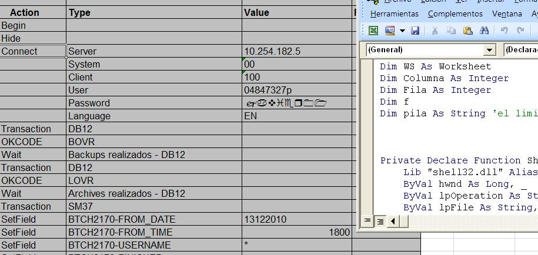

SAP Gui family has a powerful scripting engine which can be used to automate data entry to the sapgui frontend, so after combining this feature with the power of Excel VBScript the result is a simple batch interpreter for SAPGUI commands.
To perform automatically repetitive tasks which are time consuming like create hundreds of users, roles, add multiple (and different) profiles to users, etc.
To simulate workloads
To perform fast data entry
etc. up to you ...
It has been really useful for me to automate the daily system check for an ABAP Based SAP Netweaver system.
Grab the file OLE_SAP.xls → https://sourceforge.net/projects/lbscript/files/
Set to SAPGUI scripting TRUE on your ABAP Netweaver System
Startup the OLE_SAP.xls excel sheet
On the instructions sheet press the big button on top of the page, this will add a new office toolbar with an icon in 2003 versions, or an icon in the complement toolbar in office 2007.
(This works for Oracle database based systems ) Fill in the host, user and password of the sheet named SYSCHECK.
Position the cursor over the cell titled Action and press the newly created icon (Cell B5)
If everything is Ok a standard system check will be performed.
…. just don't hold your breath waiting because having kids leaves you with very little spare time.
Anyway, you can contact me in contact details and if this is a feature good to have we can add this to the feature list.
Check out my profile in LinkedIn
Luis Esteban – http://www.linkedin.com/in/luisesteban
Or in SDN – http://www.sdn.sap.com/irj/scn/bc?u=N5qXxKydvZo%3D
Symptom: The interface looks awful, this sucks.
Solution: The Excel application has to be enabled in the “SAP Configuration” in the control panel
Symptom: It does not work.
Solution: Check it SAPGUI is completely installed and scripting is enabled in the ABAP system
Symptom: The script behaves differently in different computers.
Solution: Because this is only sending commands to your sapgui frontend, and your sapgui configurations differ, for example, in PFCG you can set to show the organizational assignment of a role or no to show it.
Symptom: Some actions in the instructions tab do not seem to work.
Solution: Yes, yellow ones are in process of implementation.
Symptom: Man, it's hard to say but …. this web page sucks.
Solution: Yes I know, I don't like it either!. But I'm a sysadmin, and I will welcome any help you can provide for this issue, translation, or else.